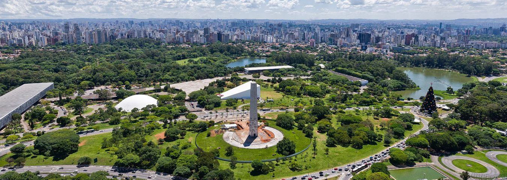
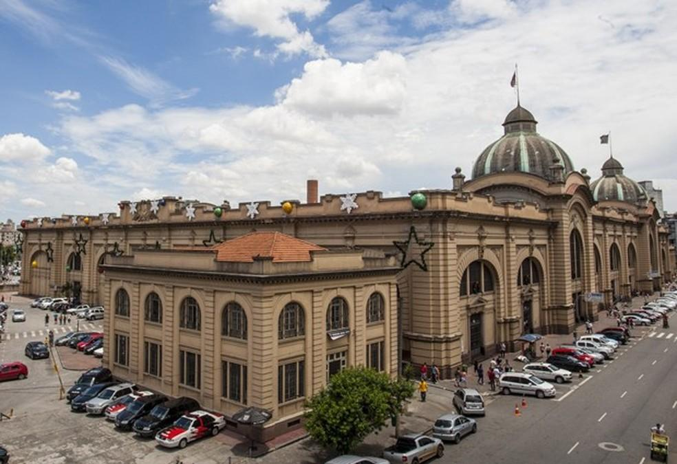

Bem-vindo a São Paulo, a maior cidade do Brasil e um dos destinos urbanos mais vibrantes da América Latina! Conhecida por sua diversidade cultural, vida noturna agitada, gastronomia de nível internacional e inúmeras opções de lazer, São Paulo é o destino ideal para quem busca experiências únicas.

O Parque Ibirapuera é um dos maiores e mais importantes espaços verdes da cidade. Ideal para quem busca lazer ao ar livre, o parque oferece pistas para caminhada, ciclismo, áreas para piquenique e espaços para prática de esportes.
Além da natureza, o parque abriga importantes centros culturais, como o Museu de Arte Moderna de São Paulo e o Auditório Ibirapuera, projetado pelo renomado arquiteto Oscar Niemeyer. É um lugar perfeito para relaxar e ao mesmo tempo aproveitar a cultura.

O Mercado Municipal de São Paulo, conhecido popularmente como Mercadão, é um dos pontos turísticos mais famosos da cidade. Inaugurado em 1933, o local se destaca pela sua arquitetura histórica e pelos belos vitrais que retratam cenas do cotidiano e da produção de alimentos.
O Mercadão é um verdadeiro paraíso gastronômico, reunindo uma grande variedade de frutas, temperos, queijos, carnes e produtos típicos do Brasil e do mundo. É um lugar ideal tanto para turistas quanto para moradores que buscam qualidade e diversidade.
Além disso, o local é famoso por seus pratos tradicionais, como o sanduíche de mortadela e o pastel de bacalhau, que atraem visitantes de todas as partes. Visitar o Mercadão é uma experiência única, combinando cultura, história e muita comida boa em um só lugar.
GASTRONOMIA
▶ Assista: clique na imagem e Veja como esse prato é preparado!